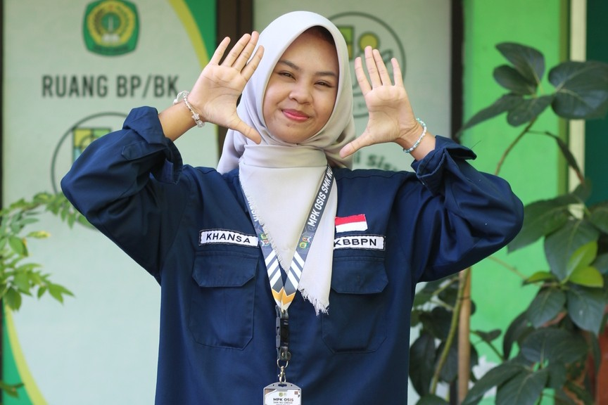
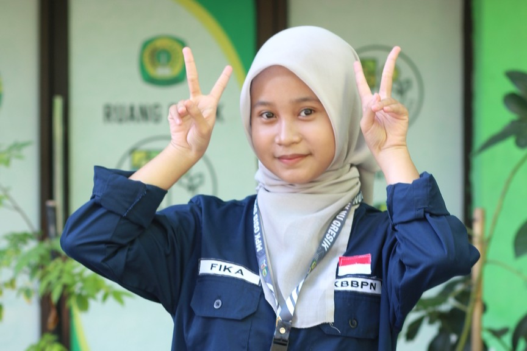
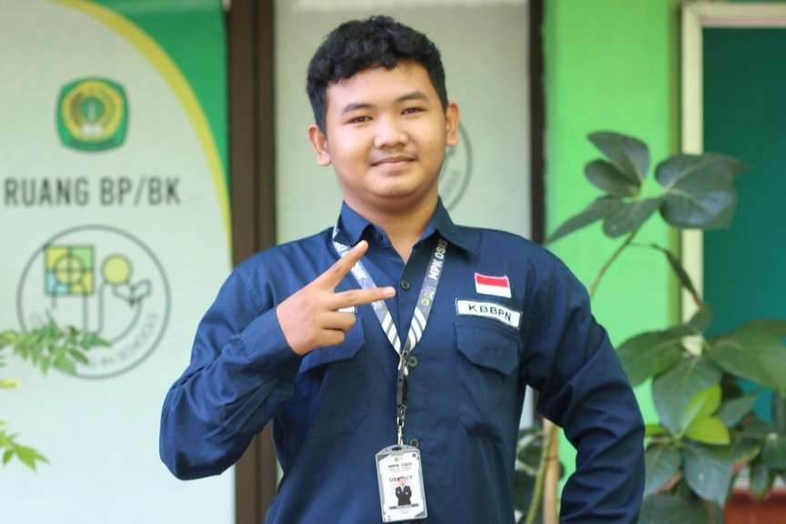

M. Mustofa, S.Pd.
Pembina Sekbid KB2PN






Sekbid KB2PN merupakan seksi bidang yang bergerak di kegiatan kenegaraan atau kegiatan nasional dan mengusung tema nasionalisme yang berhubungan dengan Peringatan Hari Besar Nasional. KB2PN merupakan singkatan dari Kepribadian Berbangsa Bernegara Pendahuluan dan Bela Negara.
Adapun program kerja yang dilaksanakan oleh Sekbid KB2PN:

10 November adalah hari di mana kita mengenang jasa para pahlawan yang telah berjuang demi kemerdekaan Negara kesatuan Republik Indonesia. Oleh karena itu, Sekbid KB2PN mengadakan serangkaian acara lomba Baca Puisi yang diikuti oleh seluruh murid-murid di Parkiran SMK NU Gresik.

25 November adalah hari penghargaan dan penghormatan atas jasa, dedikasi, serta pengabdian para pendidik dalam mencerdaskan bangsa dan membentuk karakter generasi penerus. Sebagai bentuk apresiasi, Sekbid KB2PN mengadakan sebuah program kerja dengan memberikan bapak/ibu guru hadiah-hadiah seperti keperluan rumah tangga menggunakan anggaran dari murid-murid untuk guru dan dikemas melalui sebuah game "Spin".

21 April adalah hari dimana kita menghormati jasa R.A. Kartini sebagai pelopor emansipasi perempuan terutama dalam hal pendidikan, kebebasan berkarya tanpa memandang batasan gender. Maka dari itu, Sekbid KB2PN mengadakan sebuah program kerja "Kartini Berkarya Melalui Nada", serangkaian acara lomba Menyanyi Lagu Daerah dengan memakai kostum sesuai lagu yang dinyanyikan.

2 Mei adalah hari penghormatan jasa Ki Hajar Dewantara sebagai pelopor pendidikan bagi kaum pribumi di Indonesia dari zaman penjajahan Belanda. Maka dari itu, Sekbid KB2PN mengadakan sebuah serangkaian acara lomba Cerdas Cermat yang diikuti oleh kelas X dan XI non PKL di Ruang Multimedia pada tanggal 4 dan 8 Mei 2026.

17 Agustus adalah hari dimana kita memperingati kemerdekaan Indonesia dari penjajahan Belanda. Oleh karena itu, Sekbid KB2PN mengadakan serangkaian acara lomba yang diikuti oleh seluruh murid-murid di Parkiran SMK NU Gresik, seperti lomba Waterboom, lomba Bakiyak, dan lomba Voli Air.